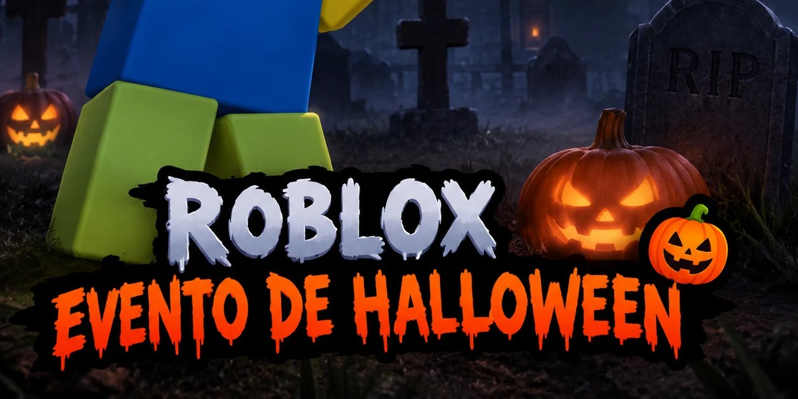
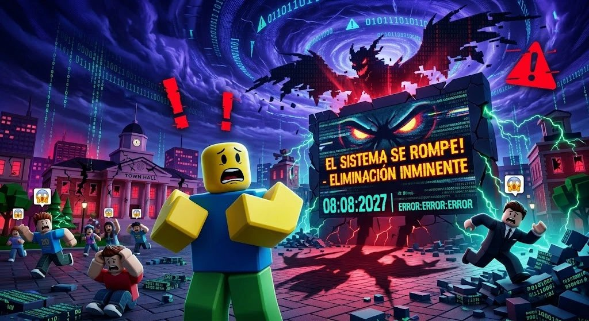

Noticias y eventos de Roblox
Eventos, noticias y rumores de Roblox explicados.

Evento
Evento de Halloween Roblox 2026
Todo lo que necesitas para aprovechar los eventos de Halloween de este octubre en Roblox.
Noticias
Roblox cumple 20 años: la historia de 2006 a 2026
De un pequeño proyecto llamado DynaBlocks a una de las plataformas de juegos más grandes del mundo.

Rumores
El “hacker del 8 de agosto de 2027”: ¿es real?
Circula el rumor de que un hacker romperá Roblox y borrará cuentas. Te explicamos qué hay de cierto.